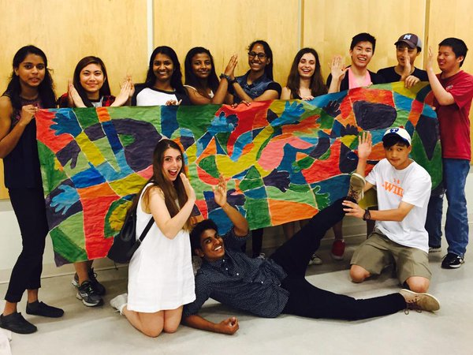
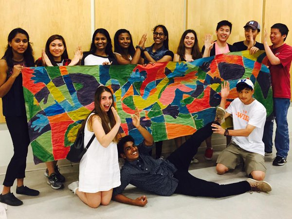

The ChangeTheWorld - Ontario Youth Volunteer Challenge is a call to action for youth aged 14 to 18 years to volunteer through a wide variety of exciting community initiatives. Now in its 8th year, ChangeTheWorld is an opportunity for youth to be part of a provincial campaign and to be a force for good in their local community.

 

The ChangeTheWorld: Ontario Youth Challenge is a program of the Ministry of Citizenship, Immigration and International Trade (MCIIT) that aims to empower youth aged 14 to 18 to be a force for good in their school and /or local community. Now in its ninth year, the ChangeTheWorld challenge will see students from across Ontario be part of a provincial campaign that encourages them to see the value of civic responsibility. They learn that the contributions they make support and strengthen their communities.
Participation in the campaign is open to all secondary school students across the province and contributes to the 40 community involvement hours required to obtain an Ontario Secondary School Diploma. Students who participate in the campaign have the opportunity to volunteer with their friends and to be part of a larger provincial initiative that demonstrates their contribution to communities in Ontario. We encourage you to engage the students in your school. Throughout Ontario last year, almost 41,400 youth volunteered an astounding 226,982 hours. Let's keep the momentum going.
ChangeTheWorld also allows secondary students to count volunteer hours from a SpeakUp Project towards the ChangeTheWorld campaign. Since 2008, SpeakUp Project grants from the Ministry of Education's Student Voice initiative have been open to students in grades 7-12 at publicly funded schools. These grants are for student-led projects designed to strengthen student engagement (academically, socially, and intellectually) and have a lasting impact in the school community. The deadline to apply for this year's funding is Feburary 5th 2016.
ChangeTheWorld 2016 kicks off during National Volunteer Week and runs for six weeks from April 10 through to May 22, 2016. ChangeTheWorld is delivered through a partnership with the Ontario Volunteer Centre Network (OVCN) and its 24 local volunteer centres.
Co-Chair
Executive/Webmaster
Executive/Events Planner
Executive
Executive
Executive/Webmaster
Executive/Webmaster
Executive/Webmaster
Executive/Webmaster